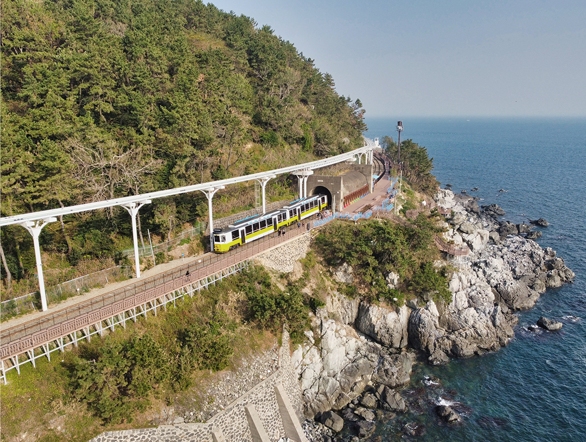
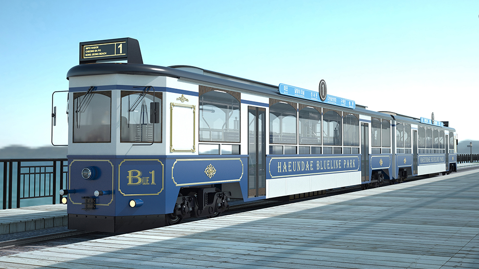
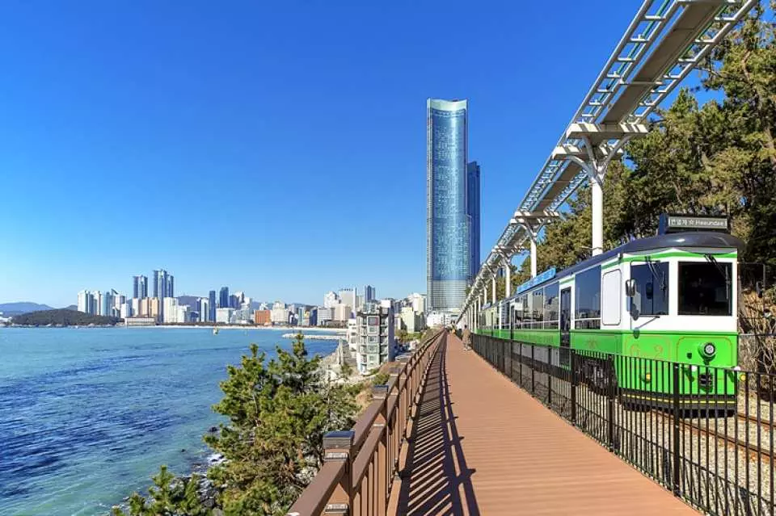
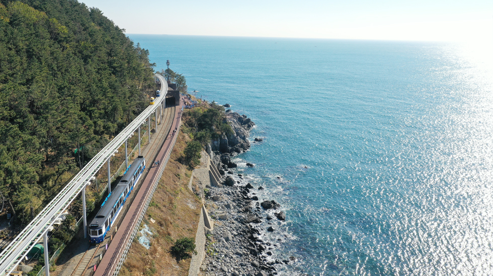
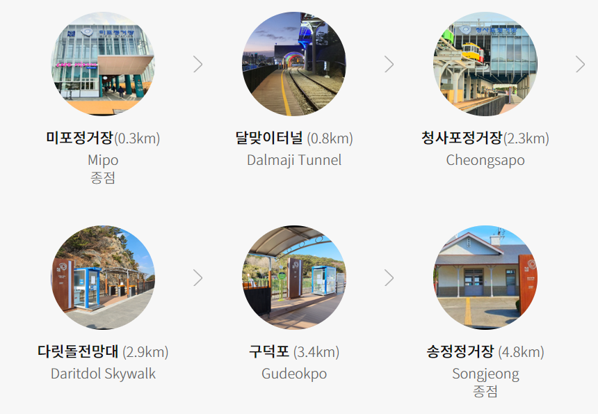
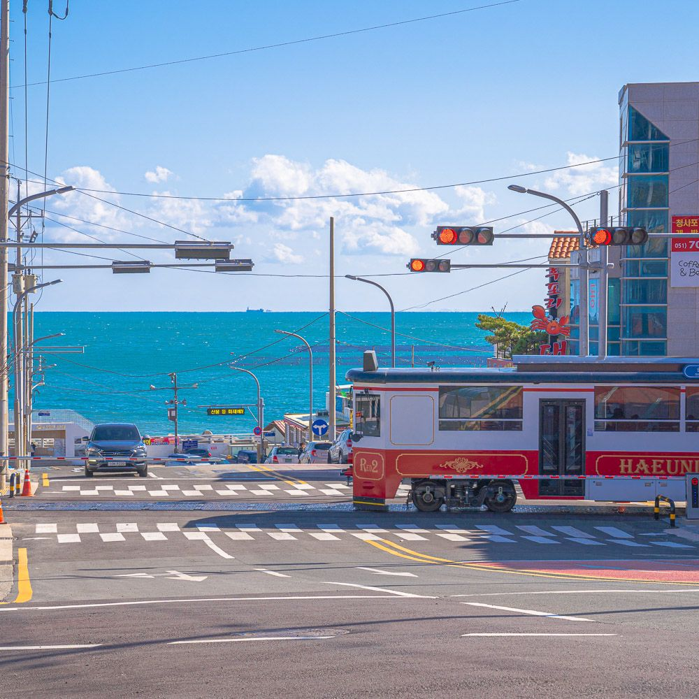

路线 & 售票处
尾浦站和松亭站是终点站。
路线共4.8公里，时速15公里。
售票处在尾浦，青沙浦，松亭车站。
其他车站都有无人售票机。
价格表
尾浦站和松亭站是最后一站，
所有乘客必须在到达时下车。
如果要来回，
必须购买往返车票或自由乘车票。
| 商品 | 单程，乘车1次 | 往返，乘车2次 | 自由乘车 |
|---|---|---|---|
| 价格（韩币 Won） | 7,000 | 12,000 | 16,000 |
| 注意事项 | 下车后 不可以再次乘坐 |
下车后 可以再一次入场乘坐 |
所有站点均可用 （不允许在同一站点进行 2 次进入） |

运营时间

路线